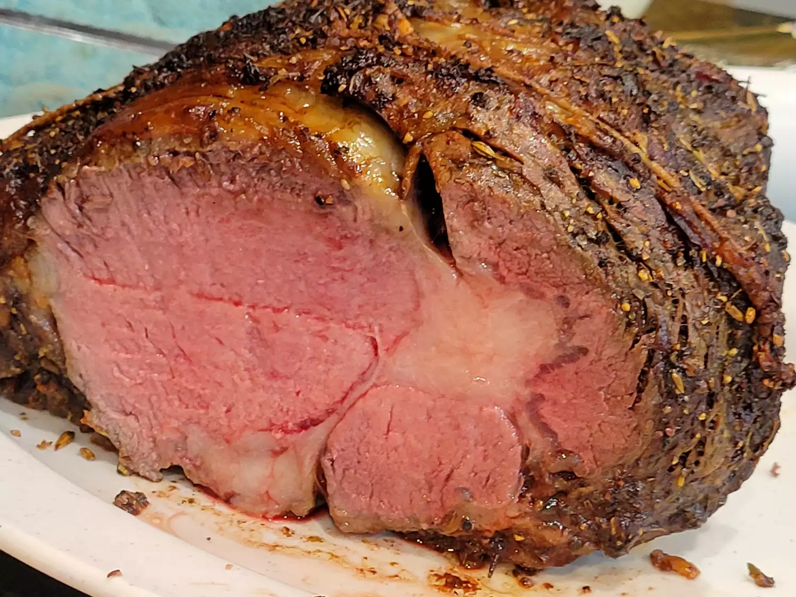

Prime Rib Recipe!

Description
Prime rib is a classic roast beef preparation made from the beef rib primal cut,
usually roasted with the bone in and served with a simple pan sauce made from its natural juices (au jus).
The word "prime" is a legal designation that refers to the fact that the beef has been graded prime by the USDA.
If the meat is not labeled as "prime" then it is simply a standing rib roast, or, if it is boneless, it is a rib-eye roast.
Ingredients
- 1 (4 pound) bone-in prime rib roast (room temperature)
- ¼ cup unsalted butter, softened
- 1 tablespoon freshly ground black pepper
- 1 teaspoon herbes de Provence
- kosher salt to taste
Steps
- Gather the ingredients. Place prime rib roast on a plate and bring to room temperature, 2 to 4 hours.
Preheat the oven to 500 degrees F (260 degrees C).
- Combine butter, pepper, and herbes de Provence in a bowl; mix until well blended.
Spread butter mixture evenly over entire roast.
Season roast generously with kosher salt.
- Roast the 4-pound roast in the preheated oven for 20 minutes.
(If your roast is larger or smaller than 4 pounds, multiply the exact weight times 5 minutes.)
- Turn the oven off and, leaving the roast in the oven with the door closed,
let the roast sit in the oven for 2 hours.
- Remove roast from the oven, slice, and serve.